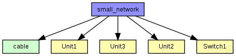
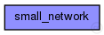

This documentation is released under the Creative Commons license
This documentation is released under the Creative Commons licenseSmall sample network with three hosts and one switch that shows how to configure the TTEthernet Model. Configuration in omnetpp.ini

The following diagram shows usage relationships between types. Unresolved types are missing from the diagram. Click here to see the full picture.
The following diagram shows inheritance relationships for this type. Unresolved types are missing from the diagram. Click here to see the full picture.
| Name | Value | Description |
|---|---|---|
| isNetwork |
| Name | Type | Default value | Description |
|---|---|---|---|
| unit1.phy.tteInput.ct_marker | int | 0 |
Critical traffic marker of the buffer |
| unit1.phy.tteInput.ct_mask | int | 0 |
Critical traffic mask of the buffer |
| unit1.phy.tteInput.incomings | string | "" |
Comma seperated list of ctc modules the input uses |
| unit1.phy.mac.address | string | "auto" |
MAC address as hex string (12 hex digits), or "auto". "auto" values will be replaced by a generated MAC address in init stage 0. |
| unit1.phy.mac.txQueueLimit | int | 1000 |
maximum number of frames queued up for transmission; additional frames are dropped. Only used if queueModule=="" |
| unit1.phy.mac.frameBursting | bool | true |
enable/disable frame bursting mode in Gigabit Ethernet |
| unit1.phy.mac.mtu | int | 1500 | |
| unit1.cli.destAddress | string | "" |
destination MAC address, or module path name of destination station; empty means off |
| unit1.cli.startTime | double | this.sendInterval |
time of sending the first request |
| unit1.cli.stopTime | double | 0 |
time of finish sending, 0 means forever |
| unit1.cli.sendInterval | double | uniform(0s,1s) |
interval between sending requests |
| unit1.cli.reqLength | int | 100B |
length of request packets |
| unit1.cli.respLength | int | 1KiB |
length of response packets |
| unit1.tteScheduler.tick | double | 80ns |
Length of a tick |
| unit1.tteScheduler.max_drift | double | 16ps |
Maximum clock drift (e.g 16ps for 200ppm at 80ns per tick) |
| unit1.tteScheduler.max_drift_change | double | 1ps |
Maximum clock drift change per cycle |
| unit1.tteScheduler.cycle_ticks | int | 37500 |
Number of ticks for one cycle |
| unit1.tteApp.buffers | string |
Comma seperated list of buffer modules the application is allowed to use |
|
| unit1.bgIn.priority | int | -1 |
Priority of the buffer (currently only used for rate-constrained traffic) |
| unit1.bgIn.ct_id | int | 0 |
Critical traffic ID of the buffer |
| unit1.bgIn.ct_marker | int | 0 |
Critical traffic marker of the buffer |
| unit1.bgIn.ct_mask | int | 0 |
Critical traffic mask of the buffer |
| unit1.bgIn.destination_gates | string | "" |
Comma seperated list of gates where the frames of the buffer are delivered |
| unit1.bgOut.priority | int | -1 |
Priority of the buffer (currently only used for rate-constrained traffic) |
| unit1.bgOut.ct_id | int | 0 |
Critical traffic ID of the buffer |
| unit1.bgOut.ct_marker | int | 0 |
Critical traffic marker of the buffer |
| unit1.bgOut.ct_mask | int | 0 |
Critical traffic mask of the buffer |
| unit1.bgOut.destination_gates | string | "" |
Comma seperated list of gates where the frames of the buffer are delivered |
| unit1.vl_100_ctc.receive_window_start | int |
Beginning of the receive window in number of ticks |
|
| unit1.vl_100_ctc.receive_window_end | int |
End of the receive window in number of ticks |
|
| unit1.vl_100_ctc.permanence_pit | int |
permanence point in time in number of ticks |
|
| unit1.vl_100.priority | int | -1 |
Priority of the buffer (currently only used for rate-constrained traffic) |
| unit1.vl_100.ct_id | int | 0 |
Critical traffic ID of the buffer |
| unit1.vl_100.ct_marker | int | 0 |
Critical traffic marker of the buffer |
| unit1.vl_100.ct_mask | int | 0 |
Critical traffic mask of the buffer |
| unit1.vl_100.destination_gates | string | "" |
Comma seperated list of gates where the frames of the buffer are delivered |
| unit1.vl_100.sendWindowStart | int | 0 |
Beginning of the send window in number of ticks (Changes to this parameter will get active for future scheduled frames only) |
| unit1.vl_100.sendWindowEnd | int | 0 |
End of the send window in number of ticks |
| unit2.phy.tteInput.ct_marker | int | 0 |
Critical traffic marker of the buffer |
| unit2.phy.tteInput.ct_mask | int | 0 |
Critical traffic mask of the buffer |
| unit2.phy.tteInput.incomings | string | "" |
Comma seperated list of ctc modules the input uses |
| unit2.phy.mac.address | string | "auto" |
MAC address as hex string (12 hex digits), or "auto". "auto" values will be replaced by a generated MAC address in init stage 0. |
| unit2.phy.mac.txQueueLimit | int | 1000 |
maximum number of frames queued up for transmission; additional frames are dropped. Only used if queueModule=="" |
| unit2.phy.mac.frameBursting | bool | true |
enable/disable frame bursting mode in Gigabit Ethernet |
| unit2.phy.mac.mtu | int | 1500 | |
| unit2.cli.destAddress | string | "" |
destination MAC address, or module path name of destination station; empty means off |
| unit2.cli.startTime | double | this.sendInterval |
time of sending the first request |
| unit2.cli.stopTime | double | 0 |
time of finish sending, 0 means forever |
| unit2.cli.sendInterval | double | uniform(0s,1s) |
interval between sending requests |
| unit2.cli.reqLength | int | 100B |
length of request packets |
| unit2.cli.respLength | int | 1KiB |
length of response packets |
| unit2.tteScheduler.tick | double | 80ns |
Length of a tick |
| unit2.tteScheduler.max_drift | double | 16ps |
Maximum clock drift (e.g 16ps for 200ppm at 80ns per tick) |
| unit2.tteScheduler.max_drift_change | double | 1ps |
Maximum clock drift change per cycle |
| unit2.tteScheduler.cycle_ticks | int | 37500 |
Number of ticks for one cycle |
| unit2.tteApp.buffers | string |
Comma seperated list of buffer modules the application is allowed to use |
|
| unit2.bgIn.priority | int | -1 |
Priority of the buffer (currently only used for rate-constrained traffic) |
| unit2.bgIn.ct_id | int | 0 |
Critical traffic ID of the buffer |
| unit2.bgIn.ct_marker | int | 0 |
Critical traffic marker of the buffer |
| unit2.bgIn.ct_mask | int | 0 |
Critical traffic mask of the buffer |
| unit2.bgIn.destination_gates | string | "" |
Comma seperated list of gates where the frames of the buffer are delivered |
| unit2.bgOut.priority | int | -1 |
Priority of the buffer (currently only used for rate-constrained traffic) |
| unit2.bgOut.ct_id | int | 0 |
Critical traffic ID of the buffer |
| unit2.bgOut.ct_marker | int | 0 |
Critical traffic marker of the buffer |
| unit2.bgOut.ct_mask | int | 0 |
Critical traffic mask of the buffer |
| unit2.bgOut.destination_gates | string | "" |
Comma seperated list of gates where the frames of the buffer are delivered |
| unit2.vl_100_ctc.receive_window_start | int |
Beginning of the receive window in number of ticks |
|
| unit2.vl_100_ctc.receive_window_end | int |
End of the receive window in number of ticks |
|
| unit2.vl_100_ctc.permanence_pit | int |
permanence point in time in number of ticks |
|
| unit2.vl_100.priority | int | -1 |
Priority of the buffer (currently only used for rate-constrained traffic) |
| unit2.vl_100.ct_id | int | 0 |
Critical traffic ID of the buffer |
| unit2.vl_100.ct_marker | int | 0 |
Critical traffic marker of the buffer |
| unit2.vl_100.ct_mask | int | 0 |
Critical traffic mask of the buffer |
| unit2.vl_100.destination_gates | string | "" |
Comma seperated list of gates where the frames of the buffer are delivered |
| unit2.vl_100.sendWindowStart | int | 0 |
Beginning of the send window in number of ticks (Changes to this parameter will get active for future scheduled frames only) |
| unit2.vl_100.sendWindowEnd | int | 0 |
End of the send window in number of ticks |
| unit2.vl_101_ctc.bag | int | 0 |
Bandwidth allocation gap in number of ticks (Changes to this parameter will get active for future frames only) |
| unit2.vl_101_ctc.jitter | int | 0 |
Not used |
| unit2.vl_101.priority | int | -1 |
Priority of the buffer (currently only used for rate-constrained traffic) |
| unit2.vl_101.ct_id | int | 0 |
Critical traffic ID of the buffer |
| unit2.vl_101.ct_marker | int | 0 |
Critical traffic marker of the buffer |
| unit2.vl_101.ct_mask | int | 0 |
Critical traffic mask of the buffer |
| unit2.vl_101.destination_gates | string | "" |
Comma seperated list of gates where the frames of the buffer are delivered |
| unit2.vl_101.max_dispatch_delay | int | 0 |
Not used |
| unit2.vl_101.bag | int | 0 |
Bandwidth allocation gap in number of ticks (Changes to this parameter will get active for future frames only) |
| unit2.vl_101.jitter | int | 0 |
Not used |
| unit3.phy.tteInput.ct_marker | int | 0 |
Critical traffic marker of the buffer |
| unit3.phy.tteInput.ct_mask | int | 0 |
Critical traffic mask of the buffer |
| unit3.phy.tteInput.incomings | string | "" |
Comma seperated list of ctc modules the input uses |
| unit3.phy.mac.address | string | "auto" |
MAC address as hex string (12 hex digits), or "auto". "auto" values will be replaced by a generated MAC address in init stage 0. |
| unit3.phy.mac.txQueueLimit | int | 1000 |
maximum number of frames queued up for transmission; additional frames are dropped. Only used if queueModule=="" |
| unit3.phy.mac.frameBursting | bool | true |
enable/disable frame bursting mode in Gigabit Ethernet |
| unit3.phy.mac.mtu | int | 1500 | |
| unit3.cli.destAddress | string | "" |
destination MAC address, or module path name of destination station; empty means off |
| unit3.cli.startTime | double | this.sendInterval |
time of sending the first request |
| unit3.cli.stopTime | double | 0 |
time of finish sending, 0 means forever |
| unit3.cli.sendInterval | double | uniform(0s,1s) |
interval between sending requests |
| unit3.cli.reqLength | int | 100B |
length of request packets |
| unit3.cli.respLength | int | 1KiB |
length of response packets |
| unit3.tteScheduler.tick | double | 80ns |
Length of a tick |
| unit3.tteScheduler.max_drift | double | 16ps |
Maximum clock drift (e.g 16ps for 200ppm at 80ns per tick) |
| unit3.tteScheduler.max_drift_change | double | 1ps |
Maximum clock drift change per cycle |
| unit3.tteScheduler.cycle_ticks | int | 37500 |
Number of ticks for one cycle |
| unit3.tteApp.buffers | string |
Comma seperated list of buffer modules the application is allowed to use |
|
| unit3.bgIn.priority | int | -1 |
Priority of the buffer (currently only used for rate-constrained traffic) |
| unit3.bgIn.ct_id | int | 0 |
Critical traffic ID of the buffer |
| unit3.bgIn.ct_marker | int | 0 |
Critical traffic marker of the buffer |
| unit3.bgIn.ct_mask | int | 0 |
Critical traffic mask of the buffer |
| unit3.bgIn.destination_gates | string | "" |
Comma seperated list of gates where the frames of the buffer are delivered |
| unit3.bgOut.priority | int | -1 |
Priority of the buffer (currently only used for rate-constrained traffic) |
| unit3.bgOut.ct_id | int | 0 |
Critical traffic ID of the buffer |
| unit3.bgOut.ct_marker | int | 0 |
Critical traffic marker of the buffer |
| unit3.bgOut.ct_mask | int | 0 |
Critical traffic mask of the buffer |
| unit3.bgOut.destination_gates | string | "" |
Comma seperated list of gates where the frames of the buffer are delivered |
| unit3.vl_100_ctc.receive_window_start | int |
Beginning of the receive window in number of ticks |
|
| unit3.vl_100_ctc.receive_window_end | int |
End of the receive window in number of ticks |
|
| unit3.vl_100_ctc.permanence_pit | int |
permanence point in time in number of ticks |
|
| unit3.vl_100.priority | int | -1 |
Priority of the buffer (currently only used for rate-constrained traffic) |
| unit3.vl_100.ct_id | int | 0 |
Critical traffic ID of the buffer |
| unit3.vl_100.ct_marker | int | 0 |
Critical traffic marker of the buffer |
| unit3.vl_100.ct_mask | int | 0 |
Critical traffic mask of the buffer |
| unit3.vl_100.destination_gates | string | "" |
Comma seperated list of gates where the frames of the buffer are delivered |
| unit3.vl_100.sendWindowStart | int | 0 |
Beginning of the send window in number of ticks (Changes to this parameter will get active for future scheduled frames only) |
| unit3.vl_100.sendWindowEnd | int | 0 |
End of the send window in number of ticks |
| unit3.vl_101_ctc.bag | int | 0 |
Bandwidth allocation gap in number of ticks (Changes to this parameter will get active for future frames only) |
| unit3.vl_101_ctc.jitter | int | 0 |
Not used |
| unit3.vl_101.priority | int | -1 |
Priority of the buffer (currently only used for rate-constrained traffic) |
| unit3.vl_101.ct_id | int | 0 |
Critical traffic ID of the buffer |
| unit3.vl_101.ct_marker | int | 0 |
Critical traffic marker of the buffer |
| unit3.vl_101.ct_mask | int | 0 |
Critical traffic mask of the buffer |
| unit3.vl_101.destination_gates | string | "" |
Comma seperated list of gates where the frames of the buffer are delivered |
| unit3.vl_101.max_dispatch_delay | int | 0 |
Not used |
| unit3.vl_101.bag | int | 0 |
Bandwidth allocation gap in number of ticks (Changes to this parameter will get active for future frames only) |
| unit3.vl_101.jitter | int | 0 |
Not used |
| switch1.beswitch.addressTableFile | string |
set to empty string if not used |
|
| switch1.beswitch.addressTableSize | int |
max size of address table |
|
| switch1.beswitch.agingTime | double |
max idle time for address table entries (when it expires, entry is removed from the table) |
|
| switch1.phy.tteInput.ct_marker | int | 0 |
Critical traffic marker of the buffer |
| switch1.phy.tteInput.ct_mask | int | 0 |
Critical traffic mask of the buffer |
| switch1.phy.tteInput.incomings | string | "" |
Comma seperated list of ctc modules the input uses |
| switch1.phy.mac.address | string | "auto" |
MAC address as hex string (12 hex digits), or "auto". "auto" values will be replaced by a generated MAC address in init stage 0. |
| switch1.phy.mac.txQueueLimit | int | 1000 |
maximum number of frames queued up for transmission; additional frames are dropped. Only used if queueModule=="" |
| switch1.phy.mac.frameBursting | bool | true |
enable/disable frame bursting mode in Gigabit Ethernet |
| switch1.phy.mac.mtu | int | 1500 | |
| switch1.tteScheduler.tick | double | 80ns |
Length of a tick |
| switch1.tteScheduler.max_drift | double | 16ps |
Maximum clock drift (e.g 16ps for 200ppm at 80ns per tick) |
| switch1.tteScheduler.max_drift_change | double | 1ps |
Maximum clock drift change per cycle |
| switch1.tteScheduler.cycle_ticks | int | 37500 |
Number of ticks for one cycle |
| switch1.vl_100_ctc.receive_window_start | int |
Beginning of the receive window in number of ticks |
|
| switch1.vl_100_ctc.receive_window_end | int |
End of the receive window in number of ticks |
|
| switch1.vl_100_ctc.permanence_pit | int |
permanence point in time in number of ticks |
|
| switch1.vl_100.priority | int | -1 |
Priority of the buffer (currently only used for rate-constrained traffic) |
| switch1.vl_100.ct_id | int | 0 |
Critical traffic ID of the buffer |
| switch1.vl_100.ct_marker | int | 0 |
Critical traffic marker of the buffer |
| switch1.vl_100.ct_mask | int | 0 |
Critical traffic mask of the buffer |
| switch1.vl_100.destination_gates | string | "" |
Comma seperated list of gates where the frames of the buffer are delivered |
| switch1.vl_100.sendWindowStart | int | 0 |
Beginning of the send window in number of ticks (Changes to this parameter will get active for future scheduled frames only) |
| switch1.vl_100.sendWindowEnd | int | 0 |
End of the send window in number of ticks |
| switch1.vl_101_ctc.bag | int | 0 |
Bandwidth allocation gap in number of ticks (Changes to this parameter will get active for future frames only) |
| switch1.vl_101_ctc.jitter | int | 0 |
Not used |
| switch1.vl_101.priority | int | -1 |
Priority of the buffer (currently only used for rate-constrained traffic) |
| switch1.vl_101.ct_id | int | 0 |
Critical traffic ID of the buffer |
| switch1.vl_101.ct_marker | int | 0 |
Critical traffic marker of the buffer |
| switch1.vl_101.ct_mask | int | 0 |
Critical traffic mask of the buffer |
| switch1.vl_101.destination_gates | string | "" |
Comma seperated list of gates where the frames of the buffer are delivered |
| switch1.vl_101.max_dispatch_delay | int | 0 |
Not used |
| switch1.vl_101.bag | int | 0 |
Bandwidth allocation gap in number of ticks (Changes to this parameter will get active for future frames only) |
| switch1.vl_101.jitter | int | 0 |
Not used |
// // Small sample network with three hosts and one switch that shows how to // configure the TTEthernet Model. Configuration in omnetpp.ini // - Uses 3ms Cycletime // - 80ns Tick length // network small_network { types: // // All links are configured with 100MBit per second and variable delay // channel cable extends ned.DatarateChannel { datarate = 100Mbps; } submodules: unit1: Unit1 { @display("p=39,70"); } unit2: Unit2 { @display("p=249,30"); } unit3: Unit3 { @display("p=249,102"); } switch1: Switch1 { parameters: @display("p=147,70"); gates: ethg[3]; } connections: // // The example uses a simple star topology // unit1.ethg <--> cable { delay = 200ns; } <--> switch1.ethg[0]; unit2.ethg <--> cable { delay = 100ns; } <--> switch1.ethg[1]; unit3.ethg <--> cable { delay = 50ns; } <--> switch1.ethg[2]; }
This documentation is released under the Creative Commons license